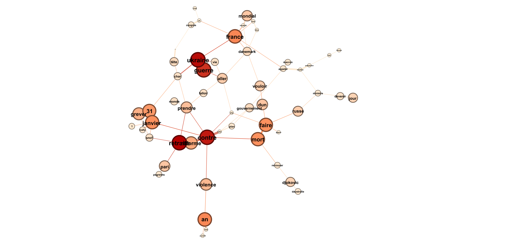

Objectif : faire une analyse des flux RSS des grands médias français pour créer un Text Network représentant les tendances de l'actualité ainsi que les liens entre les termes les plus fréquents.
GitHubPour récupérer des articles d'actualités françaises je me suis basé sur les flux RSS des médias suivants :
feed_urls = [
"http://www.lemonde.fr/rss/une.xml",
"https://www.bfmtv.com/rss/news-24-7/",
"https://www.liberation.fr/rss/",
"http://www.lefigaro.fr/rss/figaro_actualites.xml",
"https://www.franceinter.fr/rss",
"https://www.lexpress.fr/arc/outboundfeeds/rss/alaune.xml",
"https://www.francetvinfo.fr/titres.rss",
"https://www.la-croix.com/RSS",
"http://tempsreel.nouvelobs.com/rss.xml",
"http://www.lepoint.fr/rss.xml",
"https://www.france24.com/fr/rss",
"https://feeds.leparisien.fr/leparisien/rss",
"https://www.ouest-france.fr/rss/une",
"https://www.europe1.fr/rss.xml",
"https://partner-feeds.20min.ch/rss/20minutes",
"https://www.afp.com/fr/actus/afp_actualite/792,31,9,7,33/feed"
]
Un rapide script pour récupérer les titres et descriptions de tous les articles avec l'utilisation des librairies BeautifulSoup, Pandas et requests.
def scrap(feed_urls):
news_list = pd.DataFrame(columns=('title', 'summary'))
for feed_url in feed_urls:
res = requests.get(feed_url)
feed = BeautifulSoup(res.content, features='xml')
articles = feed.findAll('item')
for article in articles:
title = BeautifulSoup(article.find('title').get_text(), "html").get_text()
summary = ""
if (article.find('description')):
summary = BeautifulSoup(article.find('description').get_text(), "html").get_text()
news_list.loc[len(news_list)] = [title, summary]
return news_list
Il faut ensuite traiter le texte des articles à l'aide des librairies Spacy et NLTK qui parsent le texte en enlevant les charactères spéciaux, puis qui tokenize chaques termes et enfin qui les lemmatisent. On calcule aussi le vocabulaire ainsi que ses fréquences selon le corpus.
def process_text(docs, lang='fr'):
if (lang=='fr'):
nlp = spacy.load('fr_core_news_sm')
elif (lang=='en'):
nlp = spacy.load('en_core_web_sm')
# Utility functions
punctuation_chars = [
chr(i) for i in range(sys.maxunicode)
if category(chr(i)).startswith("P")
]
def tokenize(text):
text = "".join(list(filter(lambda x: x not in [*string.punctuation, *punctuation_chars], text)))
tokens = nltk.word_tokenize(text)
words = list(filter(lambda x: x not in [stopwords.words('english') + stopwords.words('french')], tokens))
return list(map(lambda x: x.lower(), words))
def preprocess_text(documents):
docs = list(map(lambda doc: tokenize(doc), documents))
return docs
# Clean and tokenize docs
tokenized_docs = preprocess_text(docs)
# Lemmanize docs
def lemmanize(doc):
doc = list(filter(lambda token: token.lemma_ not in nlp.Defaults.stop_words, doc))
return list(map(lambda token: token.lemma_, doc))
lemma_docs = list(map(lambda doc: lemmanize(nlp(" ".join(doc))), tokenized_docs))
def get_vocabulary_frequency(documents):
vocabulary = dict()
for doc in documents:
for word in doc:
print(word)
if word in list(vocabulary.keys()):
vocabulary[word] += 1
else:
vocabulary[word] = 1
return vocabulary
voc = get_vocabulary_frequency(lemma_docs)
return lemma_docs, voc
Afin de visualiser le network, il faut dans un premier temps lister les liens (edges) entre chaques termes (nodes). Pour ce faire, on utilise la librairie NLTK et sa méthode pour calculer les bigrammes (i.e. les paires de termes voisins dans une phrase). Chaque bigramme représente donc un lien tandis que chaque terme représente un noeud dont la taille dépend de sa fréquence dans le corpus.
def graphnet(docs, voc, min_freq=5):
# Filter voc with min_freq
filtered_voc = dict(filter(lambda elem: elem[1] > min_freq, voc.items()))
term_to_voc_id = dict()
for i, term in enumerate(filtered_voc):
term_to_voc_id[term] = i
# List bigrams (edges)
finder = nltk.BigramCollocationFinder.from_documents(docs)
bigram_measures = nltk.collocations.BigramAssocMeasures()
bigrams = list(finder.score_ngrams(bigram_measures.raw_freq))
bigrams = list(map(lambda x: x[0], bigrams))
# Filter the bigrams with filtered_voc elements and replace by terms by their id
bigrams = list(filter(lambda x: x[0] in filtered_voc.keys() and x[1] in filtered_voc.keys(), bigrams))
bigrams = list(map(lambda x: (term_to_voc_id[x[0]], term_to_voc_id[x[1]]), bigrams))
# Set nodes sizes
sizes = list(filtered_voc.values())
# Format data
nodes = []
for i, term in enumerate(filtered_voc.keys()):
nodes.append({
'id': i,
'label': term,
'size': sizes[i]
})
edges = []
for i, edge in enumerate(bigrams):
(source, target) = edge
edges.append({
'id': i,
'source': source,
'target': target
})
# Write JSON files
with open('nodes.json', 'w', encoding='UTF8', newline='') as f:
writer = json.dump(nodes, f, ensure_ascii=False)
with open('edges.json', 'w', encoding='UTF8', newline='') as f:
writer = json.dump(edges, f, ensure_ascii=False)
On peut ensuite afficher le network à l'aide de la libraire D3.js, comme visible en haut de la page. On peut aussi utiliser le logiciel Gephi permettant la manipulation de large set de données, inenvisageable autrement pour le set des articles US 2022 (~250,000 articles). Ci-dessous le résultat sur Gephi pour les actualités françaises du 30 janvier 2023.
